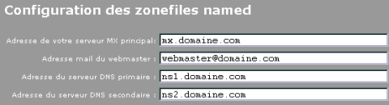

3. Configuration of DTC
3.1 Access to configuration panel

Browse to the address you have configurated during install phase (this URL was
printed at end of the install script). Clic on the topright icon to access
to the main configuration panel.
3.2 General configuration

- Demo version: let this radio button to 'no' or files and directory wont be created
and tables will be umptied at each visits.
- Use javascript : Dome dangerous actions are confirmed by some javascript code. This
tells not to use it, so it works with browsers that does not understand javascript.
- Use SSL : If this option is activated, the access to the DTC panel (admin and
client (on this example dtc.domaine.com)) will occure using https instead of http.
DTC will use OpenSSL keys generated by default in /etc/apache/ssl. Issue the
following commands to generate those cert files:
mkdir -p /etc/apache/ssl; cd /etc/apache/ssl
[quoting apache-ssl.org]
Step 1 - create the key and request:
openssl req -new > new.cert.csr
Step 2 - remove the passphrase from the key (optional):
openssl rsa -in privkey.pem -out new.cert.key
Step 3 - convert request into signed cert:
openssl x509 -in new.cert.csr -out new.cert.cert -req -signkey new.cert.key -
days 365
[/quoting apache-ssl.org]
- Generate all apache vhosts on local network ip (NAT): activate this option if your
server is behind a router that does NAT (Network Adress Translation).
- Local network area ip address of the vhosts using NAT: this options is to be
specified if you have activate the one before. It's the IP address of the server
on the LAN, and it will be used for apache's vhosts (named.conf zone files will
continue to use external IP).
- Use multiple IP: in that example, the option have been set because of the use of
NAT.
- Main side IP: Note that you can use IP that the server does not have (in the case you only
want to use them for named default conf for example).
- Host IP addresses: list here the different IP addresses that you'd like to
see in the administrator interface. You must specify at least the primary IP address.
- Full hostname of the DTC admin panel: This tells what subdomain will be used to
have Alias to /usr/share/dtc/admin and client folder. Becarefull, this subdomain
MUST exist in DTC configuration (the domain must be own by one of your admins and
the subdomain must exists with ip address to default).
3.3 Configuration of the bind zones

This part of the configuration tells how the name zone files will be genrated. The
following example zonefile corresponds to the snapshot. Values between [] are the
one that can be configurated using this HTML form. Those are default values, that
can be overrided by subdomain, NS or MX configuration for each domains.
$TTL 7200
@ IN SOA [ns1.example.com]. webmaster.example.com. (
2003092022; serial
1H ; refresh
60M ; retry
1W ; expire
24H ; default_ttl
)
@ IN NS [ns1.example.com].
@ IN NS [ns2.example.com].
@ IN MX 5 [mx.example.com].
IN A 1.2.3.4
pop IN A 1.2.3.4
smtp IN A 1.2.3.4
ftp IN A 1.2.3.4
dtc IN A 1.2.3.4
mx IN A 1.2.3.4
ns1 IN A 1.2.3.4
ns2 IN A 1.2.3.5
www IN A 1.2.3.4
3.4 Configuration of paths
Just leave it like that. It's only in the case you want to use more that one DTC
interface.